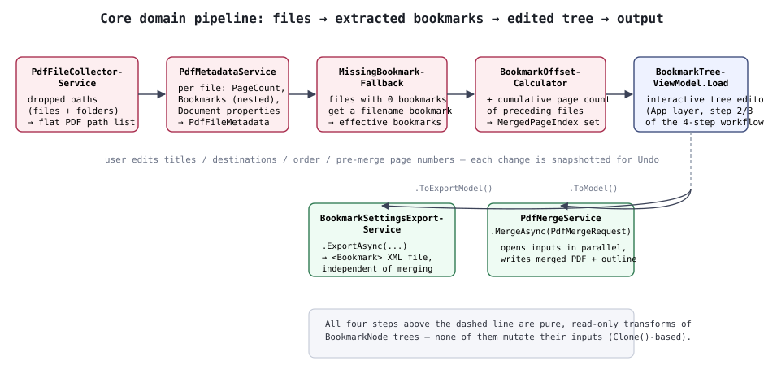

Core Layer Design
PdfBookmarkMerger.Core is the UI-framework-independent domain layer that owns
PDF I/O and the bookmark-merging logic. Every public service is registered as a Singleton via
Core/ServiceCollectionExtensions.AddPdfBookmarkMergerCore().
1Models (Core/Models)
| Type | Role |
|---|---|
| BookmarkNode | A single bookmark. Holds Title, DestinationType, coordinates (Left/Top/Right/Bottom/Zoom), IsOpen, and Children. The pair SourceFileEntryId + OriginalPageIndex is the immutable identity that pins down the jump-target page inside the source PDF. MergedPageIndex is the page number within the merged PDF (a display-only, secondary value). PageOffset is the delta from directly editing the pre-merge page number in the editor (null when unedited; a write/display-only adjustment that never affects the actual merge). Clone() returns a deep copy of itself plus descendants (with fresh Ids). |
| PdfFileEntry | One entry in the merge-target file list. FilePath, PageCount (null until resolved). |
| PdfFileMetadata | The PageCount, Bookmarks, and Properties read from a single file. |
| PdfDocumentPropertiesModel | Title/Author/Subject/Keywords/Creator. The default properties for the merged output reuse the first merge-target PDF's values. |
| PdfMergeRequest | Input to PdfMergeService.MergeAsync (file order, the edited bookmark tree, output properties, output path). |
| MergeProgress | record(int CompletedFileCount, int TotalFileCount, string CurrentFileName) — progress notification for the merge process. |
| BookmarkDestinationType | Only 4 values: XYZ / Fit / FitH / FitV (the bounding-box variants FitB* and the rectangle variant FitR aren't exposed in the UI and get simplified on read). |
BookmarkNode deliberately separates "where it sits in the bookmark tree"
(SourceFileEntryId + OriginalPageIndex) from
"where it displays after merging" (MergedPageIndex). That way, reordering the
merge order or adding/removing files never changes the identity used to pin down the jump-target page.
2Domain services (Core/Services)
PdfFileCollectorService
ExpandToPdfFilePaths(droppedPaths) — expands the paths handed over
from D&D/dialogs (a mix of files and folders) into an actual list of PDF file paths. Folders are
scanned non-recursively (only their direct contents); anything that isn't a .pdf
or doesn't exist is ignored and logged.
PdfMetadataService
ReadPageCountAsync(filePath)— reads only the page count, quickly (used for the provisional page count shown right after adding a file to the list).ReadMetadataAsync(file)— reads page count, bookmark tree, and document properties together (used during bookmark extraction).
Bookmark extraction (ExtractOutlines) walks the
PdfOutlineCollection recursively, resolving each outline's jump-target page
via a dictionary built once by reference comparison (BuildPageIndexLookup,
using ReferenceEqualityComparer). A bookmark whose target page can't be
resolved is logged as a warning and skipped.
Two known PDFsharp 6.2.4 workarounds are contained inside this service.
- Normalizing NaN coordinates (
AsFiniteOrNull) — depending on the destination type,Left/Top/Right/Bottom/Zoomcan come back as NaN/Infinity. Keeping that as-is would throw when the Undo snapshot is JSON-serialized, and would also get written back into the output PDF as an invalid value, so it's normalized tonull(meaning "unspecified"). - Reading the open/closed state (
ReadOpened) —PdfOutline.Openedhas a known bug where it misreads the sign of/Count(the field that encodes open/closed state), even though/Countitself is written correctly. The workaround reads/Countdirectly, falling back to the library's default for leaf nodes and the like where/Countdoesn't exist.
MissingBookmarkFallback
ResolveEffectiveBookmarks(orderedFiles, metadataByFileId) — for each
PDF that has zero bookmarks, resolves an "effective bookmark list" that fills in a single bookmark
titled after the filename (without extension). Its destination type follows the previous file's setting
(coordinates are not carried over). Non-destructive: it never touches its input, always returning a
freshly built result.
BookmarkOffsetCalculator
ComputeMergedBookmarks(orderedFiles, effectiveBookmarksByFileId, metadataByFileId)
— computes a cumulative page-count offset following the merge order, and returns a cloned tree
(concatenated in file order) with each bookmark's MergedPageIndex set. Never
mutates its input.
PdfMergeService
MergeAsync(request, progress, ct) runs in two phases.
- Phase 1 (parallel): opens each input PDF via
PdfReader.Open(disk I/O + structure parsing). ASemaphoreSlimcaps concurrency atMath.Clamp(Environment.ProcessorCount, 1, 8)to avoid thread-pool exhaustion and too many open file handles. - Phase 2 (single-threaded): appends each opened PDF's pages onto the output
PdfDocument(AddPage, mostly fast in-memory copying). ReportsMergeProgressafter every page addition.
ApplyBookmarks then rebuilds the outline on the output side using a
(SourceFileEntryId, OriginalPageIndex) → actual-page map. For nodes
that have children, it works around a known PDFsharp 6.2.4 bug where /Count
(the open/closed state) doesn't get written for any level below the first, by calling
Elements.SetInteger("/Count", ...) directly before saving.
Even if only some files managed to open in Phase 1 (password-protected/corrupted/locked by another
process, or a cancellation), everything opened so far is still guaranteed to get
Disposed, since Phases 1 and 2 are wrapped together in a single
try/finally.
Remapping in-page link destinations since v1.2.3
PDFsharp's AddPage duplicates page-internal link annotations
(/Subtype /Link) themselves, but unlike bookmarks, it does not rewrite the
page object referenced by a link's destination (/Dest, or
/A's (GoTo action) /D) to point at the merged
output. Left unhandled, this meant a link's destination could end up as a dangling reference to an
object that doesn't exist in the merged PDF, or could resolve to the wrong page entirely. The fix
reuses the same pageMap idea ApplyBookmarks
relies on: for each file it builds a "source page object ID → original page index" lookup
(sourcePageIndexByObjectId), uses it to identify which original page a
destination pointed at, resolves that through pageMap to the correct merged
page, and then overwrites the first element (the page reference) of the copied annotation's
/Dest//A/D array in
place. Named destinations (where /Dest is a name or string) are out of scope.
BookmarkSettingsExportService since v1.2.0
ExportAsync(bookmarks, outputPath, ct) — writes the bookmark tree out
per the "bookmark settings file spec" (UTF-8 XML, nested
<Title Page="..." Action="GoTo"> elements directly under a root
<Bookmark>). The Page attribute is written
with the same argument order as the PDF Reference's destination types (Fit/FitH/FitV/XYZ); an unset
(null) argument is filled with 0, since the spec treats that as equivalent to
null. The XML declaration line is written by hand, because XmlWriter's
default output (lowercase "utf-8") doesn't match the spec's example verbatim.
BookmarkDestinationTypeMapper internal
Converts between Core.Models.BookmarkDestinationType and PDFsharp's
PdfPageDestinationType. The conversion logic lives in the Services layer
specifically to keep Models free of any library dependency.
3The Core layer's processing pipeline, end to end

In the diagram, the four stages above the dashed line (PdfFileCollectorService
→ PdfMetadataService → MissingBookmarkFallback
→ BookmarkOffsetCalculator) are all read-only, non-mutating transforms
(built on Clone()). Only once the result reaches
BookmarkTreeViewModel.Load does it become an editable object (in the App
layer). The edited tree is then handed back to Core-layer services in two shapes:
ToModel() (for the PDF merge) and ToExportModel()
(for the bookmark settings file export, with the pre-merge page-number edit cascade already baked in).